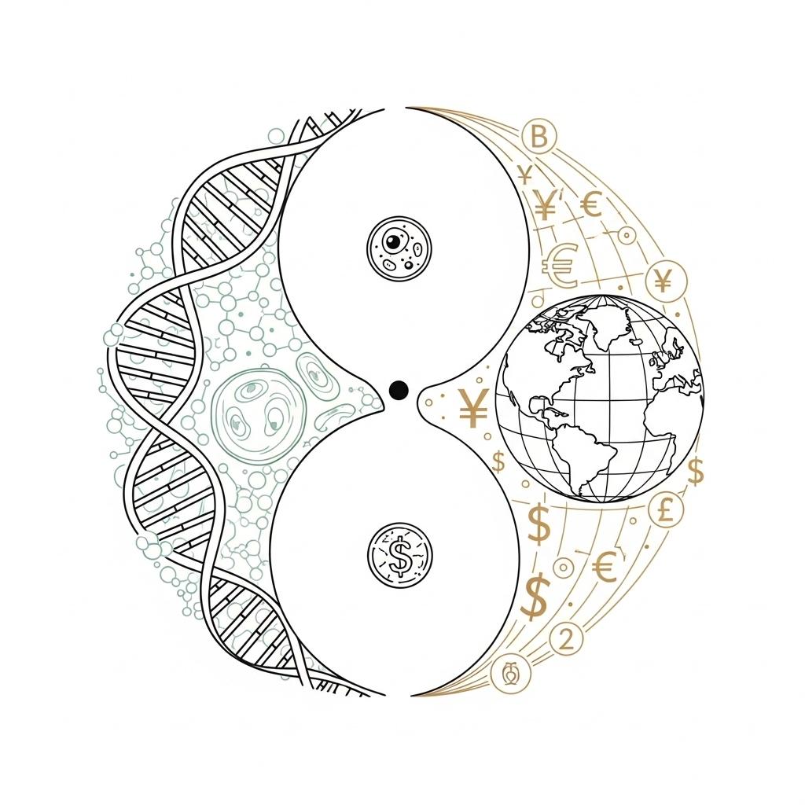

| # | When | Who | What |
| 1 | 14/03 | Ran Cohen |
Introduction [slides]
|
| 2 | 21/03 | Nathanel Ozeri |
Definitions for two-party computation (semi-honest and malicious)
[HL10] sections 2.1-2.3 |
| 28/03 | NO CLASS | |
|
| 3 | 04/04 | Shlomi Shamir |
Yao's Garbled Circuit (semi-honest two-party protocol)
[HL10] sections 3.1-3.4 (section 3.2 only at a high level) |
| 4 | 05/04 (Wednesday!) | Gal Arnon | |
| 5 | 25/4 | Noam Nissan |
GMW protocol (semi-honest multi-party protocol)
[Gol04] sections 7.3.3, 7.3.4, and 7.5.2 |
| 6 | 09/05 | Assaf Yifrach |
BGW protocol (unconditionally secure MPC for honest majority)
[AL17] sections 3 and 4 |
| 7 | 16/05 | Adam Alon |
BMR protocol (constant-round MPC)
[BNP08] sections 3 and 4 |
| 8 | 23/05 | Jhonatan Tavori |
GMW compiler (enforcing semi-honest behavior)
[Gol04] sections 7.4.1, 7.4.3, and 7.4.4 |
| 9 | 06/06 | Alon Resler |
IKOS zero-knowledge proofs (two-party ZKP from MPC)
[IKOS09] |
| 10 | 13/06 | Lev Pachmanov |
Cut and choose (Yao's protocol for malicious adversaries)
[LP12] |
| 11 | 20/06 | Doron Sobol and Rotem Tsabary |
Sigma protocols
[HL10] section 6 |
| 12 | 27/06 | David Tsiris |
Secure computation of specific functionalities
|